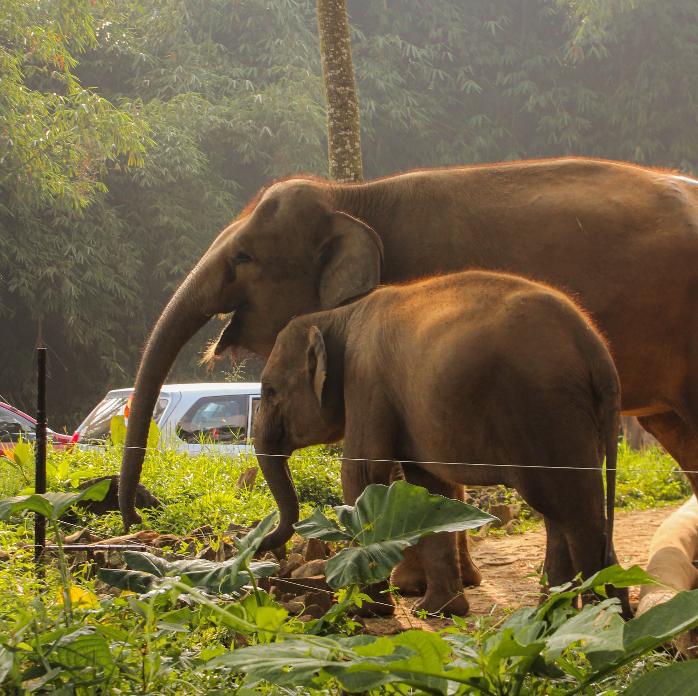
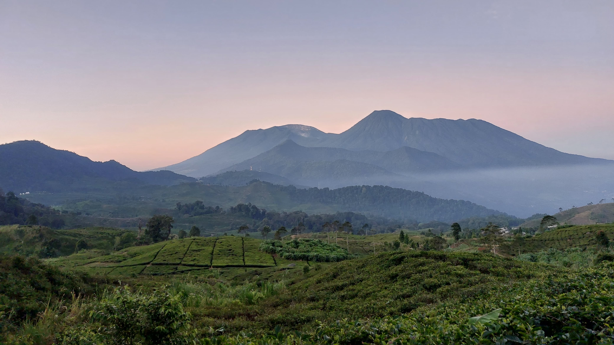

Hai, Aku Syafiq!
Namaku Syafiq Syadidul Azmi, aku seorang mahasiswa ilmu komputer IPB 60. Aku suka fotografi, bermain game, dan sedikit programming. Ini sedikit dari hasil foto-fotoku, semoga suka :].
Dul's Gallery




Namaku Syafiq Syadidul Azmi, aku seorang mahasiswa ilmu komputer IPB 60. Aku suka fotografi, bermain game, dan sedikit programming. Ini sedikit dari hasil foto-fotoku, semoga suka :].